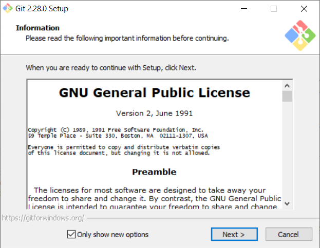
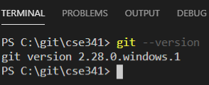
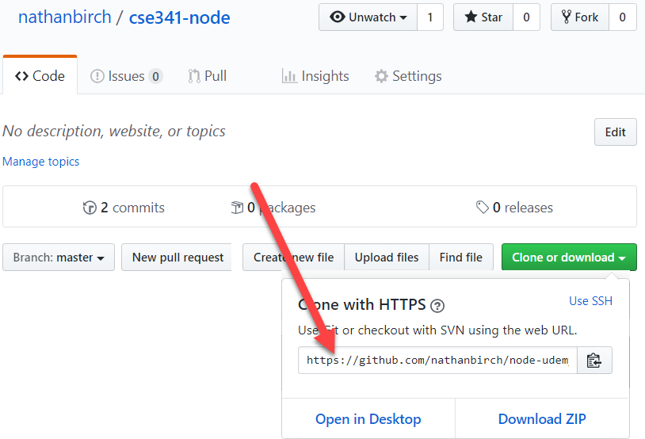
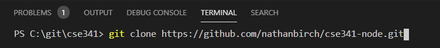

Computer Setup and Account Creation
Overview
Please be sure to complete all of these before continuing.
Visual Studio Code - Or another editor of your choiceSlack - For all course communication and collaborationGithub - To store and submit your code throughout the semester.Heroku - The cloud computing service that will host our applications
Getting all set up
Visual Studio Code
You may choose to download and install VS Code from here. You may also watch the following media content that include helpful tips and tricks to help you work efficiently with this program. If you prefer, you may work with another text/code editor or IDE of your choice.
Slack
Follow this link to download and install Slack on your computer. Slack will be used for all course communication, discussions, troubleshooting and collaboration. Once you have installed it, please find the link to join our class workspace in I-Learn.
Before you get started in Slack, please take a moment to read about Slack productivity tips and etiquette here.
Github
GitHub is essentially a big database of source code for people all around the world. You can make your source code public or private and configure many different permissions and settings. Each project has its own repository, or "repo". This repository will be a clone of the one on your local computer. Thus, you will have three copies of your code, 1) on your local computer, 2) at Heroku starting in week 2, and 3) at GitHub.
Install Git
If you haven't before, you'll need to and install git. If you already have git installed, skip this step.
Go to git-scm.com and choose the appropriate download for your operating system.
Run the installer with the default settings and wait for the installation to finish.

Restart VS Code if you have it open, and open a new terminal window by selecting New Terminal inside of the Terminal menu.
In your terminal, execute
git --version.

If "git --version" produces an error, make sure git has been added to your PATH environment variable, then restart VS Code.
Instructor Tip:
On Windows, Git is usually installed at
C:\Program Files\Git\cmd. This is the location that should be added to your PATH.

Create a new repository
Go to GitHub.com and sign up for a new account if you haven't already. If you already have an account, that is perfect, you can use it here.
After creating an account, return to GitHub.com and sign in. In the upper right corner of the screen you should see a "+" icon. Click this and select "New Repository".
Choose a name for your repository (likely cse341-node or something similar).
Leave the repo public and do not check the box for a readme. Leave .gitignore and license as "none".
Instructor Tip:
It's not technically a problem if you add these other files now, but it makes it a little more difficult when you go to push to GitHub for the first time, because you'll have conflicts that you'll have to resolve. So at this point, it's easiest to leave everything blank.
Click the button to create the repository.
On the page that follows, you should see a URL for your new repository (e.g., "https://github.com/username/repositoryname.git"). Copy this URL for use later on.
Set up the repository on your computer
Create a directory on the root of your computer called git. Inside of git, create a directory called cse341.
In VS Code, select Open Folder from the File menu. Open the /git/cse341 folder you just created.
Open a new terminal window by selecting New Terminal inside of the Terminal menu.
Return to GitHub, open your project repository, copy the link to clone it

In your terminal, execute "git clone --your url--"



Heroku
Go to Heroku and click the "Sign up" link.
Provide the request information and click on the "Create Free Account" button.
Respond to the email that you will sent to confirm your email address and activate your account.
You are now the proud owner of a cloud platform account!